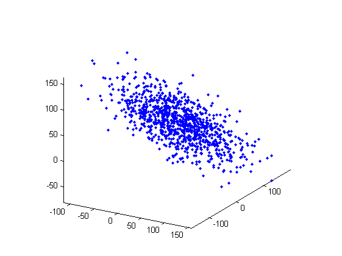
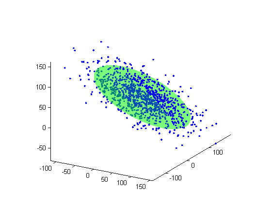

Contents
function demoInertiaEllipsoid(varargin)
Data generation
nPoints = 1000;
points = randn(nPoints, 3);
center = [20 30 40];
sizes = [70 40 10];
orient = [50 30 30];
transfo = composeTransforms3d(...
createScaling3d(sizes), ...
eulerAnglesToRotation3d(orient), ...
createTranslation3d(center));
points = transformPoint3d(points, transfo);
figure;
drawPoint3d(points, '.');
hold on;
axis equal;
view([30 20]);

Inertia ellipsoid computation and display
elli = inertiaEllipsoid(points);
drawEllipsoid(elli, 'FaceColor', 'g', 'FaceAlpha', .3);
